Photo credits and sources
Real photographs sourced from Pexels and used under the applicable licenses. Locations and devices are stock imagery, not our premises, partners, equipment or treatment results. Diagrams and interface examples are original explanatory elements.
Images from the site owner
5 images
Faceliora team photography from the official page is used with the site owner’s authorization. Event images were supplied by the site owner.
| Image | Description | Creator / source | Licence | Used on |
|---|---|---|---|---|
| Announcement image supplied by the site owner | Site owner / Faceliora team | Used with the site owner’s authorization | ||
| A moment from the ELP Season 4 activities | Site owner / Faceliora team | Used with the site owner’s authorization | ||
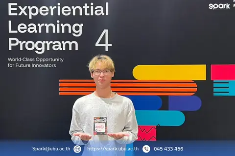 | ELP Season 4 event image supplied by the site owner | Site owner / Faceliora team | Used with the site owner’s authorization | |
| P1 New Regional Startup 2026 event image supplied by the site owner | Site owner / Faceliora team | Used with the site owner’s authorization | ||
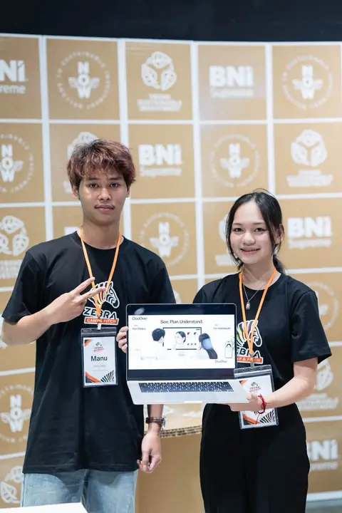 | Faceliora team at Zebra Camp & Pitch InternationalSource: the team’s FacebookThe screen shows the name used before the rebrand | Source: the team’s Facebook | Used with the site owner’s authorization |
Pexels stock photography
13 images
Real photographs sourced from Pexels and used under the applicable licenses. Locations and devices are stock imagery, not our premises, partners, equipment or treatment results.
| Image | Description | Creator / source | Licence | Used on |
|---|---|---|---|---|
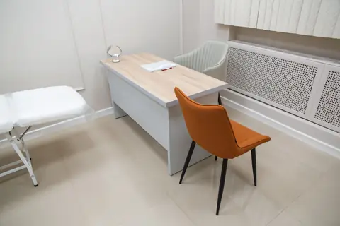 | A consultation desk, mirror and chairs in an examination room | Ivan Babydov | Pexels License |
|
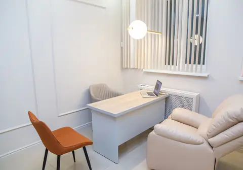 | A clinic consultation desk with a laptop and seating | Ivan Babydov | Pexels License | |
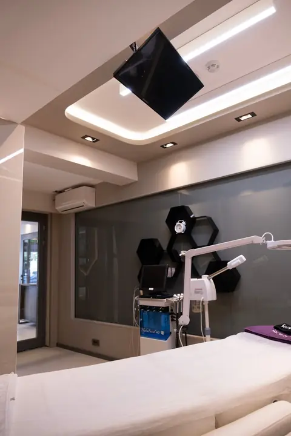 | An examination bed and lighting inside a clinic room | Yusuf Çelik | Pexels License | |
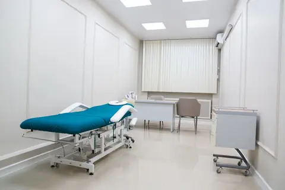 | A white examination room with a blue bed and work desk | Ivan Babydov | Pexels License | |
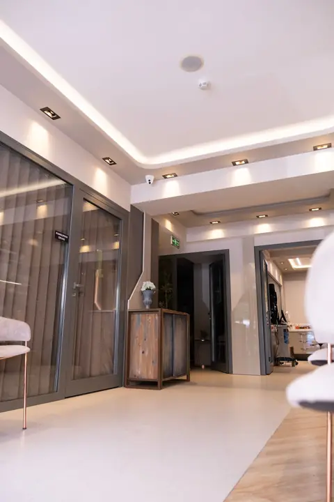 | A bright clinic waiting area and corridor | Yusuf Çelik | Pexels License | |
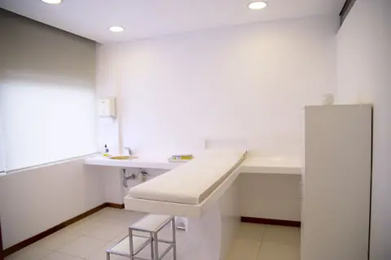 | A clean white examination room with natural light | Pixabay | Pexels License | |
| A notebook and pen on a white table, illustrative stock photo | Kaboompics | Pexels License | ||
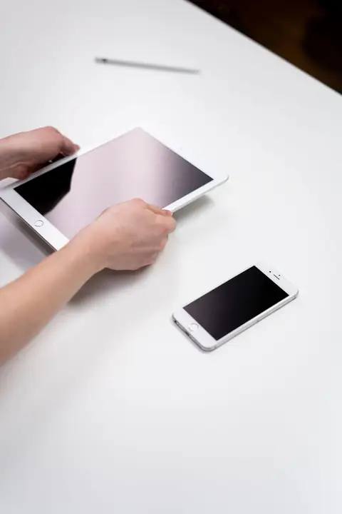 | An iPhone held in a hand, illustrative stock photo | cottonbro studio | Pexels License | |
| A finger pointing at a tablet screen beside paper, illustrative stock photo | cottonbro studio | Pexels License | ||
| A hand holding a white tablet at a desk, illustrative stock photo | cottonbro studio | Pexels License | ||
| A hand holding a white tablet, illustrative stock photo | cottonbro studio | Pexels License | ||
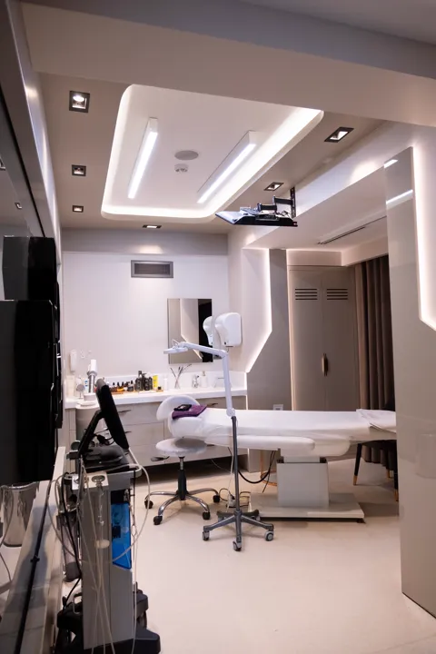 | A treatment room in a private clinic, illustrative stock photo (Home hero) | Yusuf Çelik | Pexels License | |
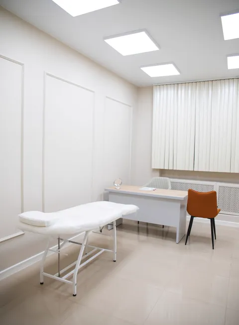 | A bed near an office table in an examination room, illustrative stock photo | Ivan Babydov | Pexels License |
AI illustrations
19 images
AI-generated illustration · fictional people and setting. Created to illustrate website content, not photographs of actual staff, customers or clinics.
| Image | Description | Creator / source | Licence | Used on |
|---|---|---|---|---|
| AI illustration: two women talking in a naturally lit clinic consultation room | ImageGen | Created for this website | ||
| AI illustration: a woman making notes at a desk in a clinic setting | ImageGen | Created for this website | ||
| AI illustration: a woman reading her smartphone beside a window | ImageGen | Created for this website | ||
| Article illustration: A clinic team records observations during a software session — AI-generated illustration with fictional people and premises | ImageGen | Created for this website | ||
| Article illustration: A person brings written questions to a clinician consultation — AI-generated illustration with fictional people and premises | ImageGen | Created for this website | ||
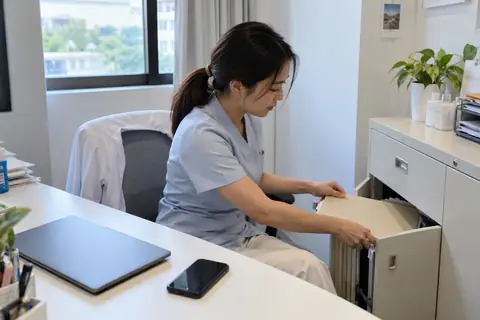 | Article illustration: A coordinator organizes documents in a clinic office — AI-generated illustration with fictional people and premises | ImageGen | Created for this website | |
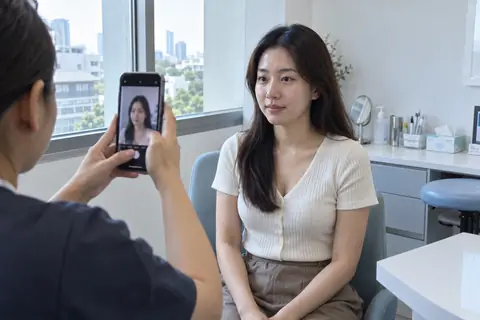 | Article illustration: Preparing a facial photograph during consultation — AI-generated illustration with fictional people and premises | ImageGen | Created for this website | |
| Article illustration: Two 2D Facial Views and a 3D Model: What’s the Difference? | ImageGen | Created for this website |
| |
| Article illustration: Evaluating facial-visualization software: a clinic demo checklist | ImageGen | Created for this website | ||
| Article illustration: Preparing a 3D Facial Model for Faceliora Clinic: A Clinic Checklist | ImageGen | Created for this website |
| |
| Article illustration: 10 questions to ask before an aesthetic treatment | ImageGen | Created for this website |
| |
| Article illustration: Facial photographs and 3D models: privacy questions before sharing | ImageGen | Created for this website |
| |
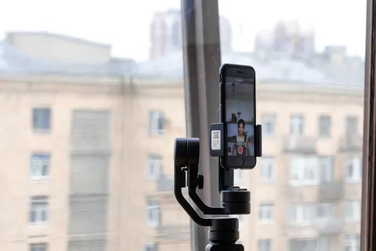 | Article illustration: Preparing facial photos for a clinic consultation: light, angles and distance | ImageGen | Created for this website |
|
| Article illustration: Using Facial Visualization in a Consultation: Questions to Discuss | ImageGen | Created for this website | ||
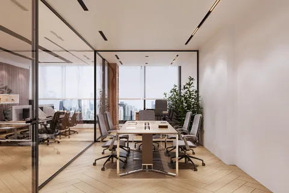 | AI illustration: a discussion around a meeting table in a bright workspace | ImageGen | Created for this website | |
| AI illustration: a woman uses her phone by a window at home | ImageGen | Created for this website | ||
| AI illustration: a clinician and coordinator discuss work at a consultation desk | ImageGen | Created for this website | ||
| AI illustration: two people discussing work beside a laptop | ImageGen | Created for this website | Image library, not placed on a page | |
| AI illustration: two people review physical layout sheets in a creative workspace | ImageGen | Created for this website | Retired (former service) |
Diagrams and charts
16 images
Diagrams and interface examples are original explanatory elements. Charts cite the research named in each guide.
| Image | Description | Creator / source | Licence | Used on |
|---|---|---|---|---|
 | Consultation in three steps: questions, original and illustrative views, and clinician discussion | Drawn for this website | - | |
 | A software-demo record distinguishing observed, tried, confirmed and unresolved items | Drawn for this website | - | |
 | External capture app, compatibility check, import into Faceliora Clinic, and consultation | Drawn for this website | - | |
 | A facial-data journey from collection to use, sharing and retention or deletion | Drawn for this website | - | |
 | Chart of grafted fat retained over time in the nasolabial area by MRI, the temple and cotton-pad filtration, with the pooled mean range | Drawn for this website | - | |
 | Chart of volume measured per 1 mL of HA filler for the midface, temple, chin, lips and tear trough, from the cited studies | Drawn for this website | - | |
 | Chart of lower-face width change at day 90 in the phase 2 and phase 3 masseter trials against placebo | Drawn for this website | - | |
 | Four steps of a phone 3D face scan: prepare, light, capture around the face and record consent | Drawn for this website | - | |
 | Preparing comparable facial photographs with consistent light, angle and distance | Drawn for this website | - | |
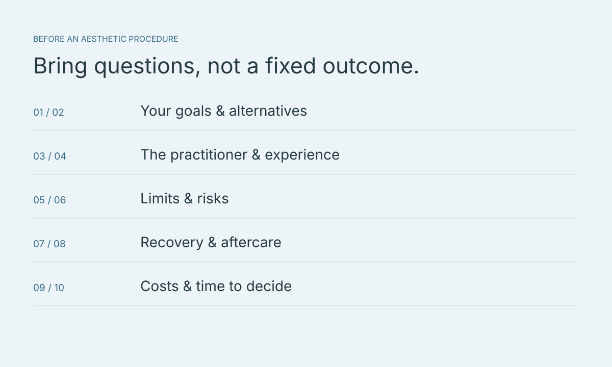 | Consultation questions covering goals, practitioners, risks, aftercare and costs | Drawn for this website | - | |
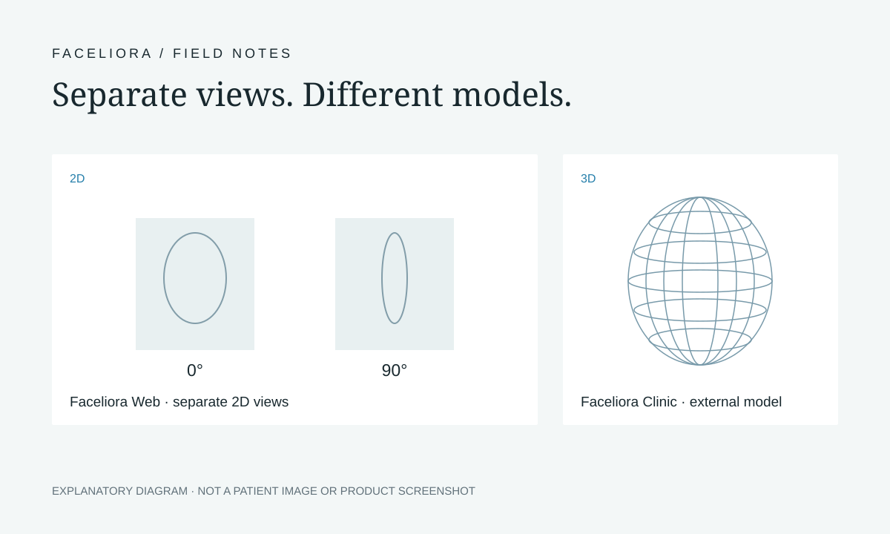 | Two separate 2D views, front (0°) and side (90°), compared with a 3D model | Drawn for this website | - | |
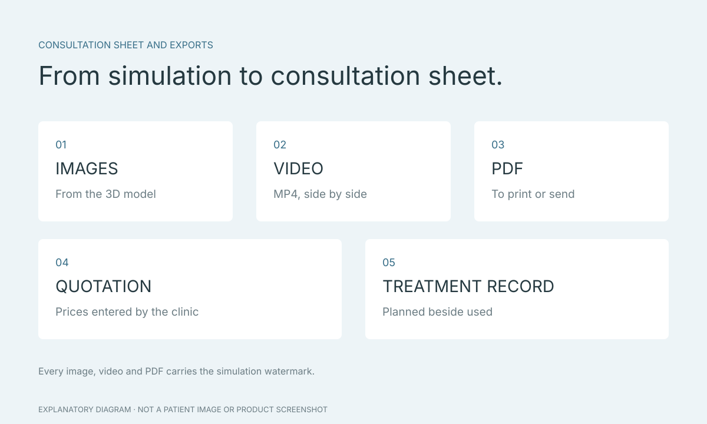 | Diagram of the exports: images from the 3D model, a video, a PDF, the clinic’s quotation and a treatment record, all with a simulation watermark | Drawn for this website | - | |
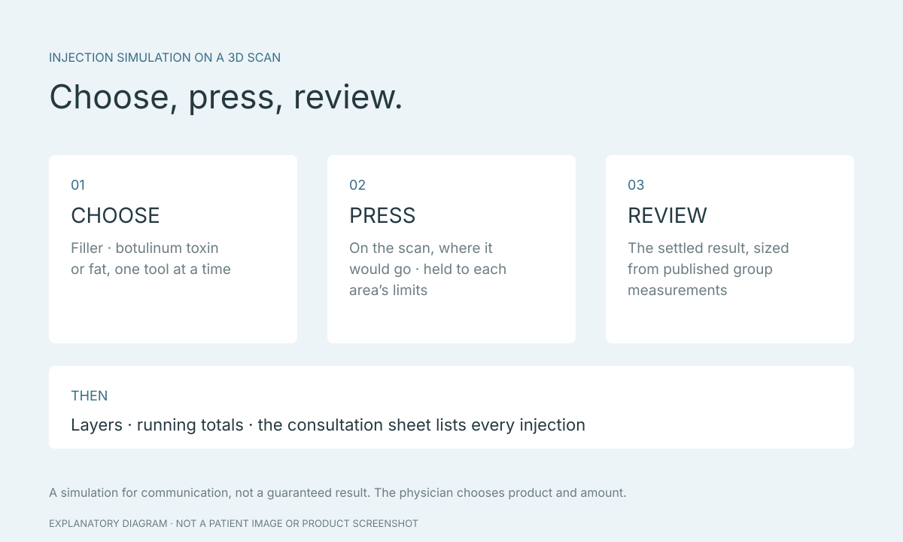 | Three steps of injection simulation: choose filler, botulinum toxin or fat, press the scan, and review the settled result | Drawn for this website | - | |
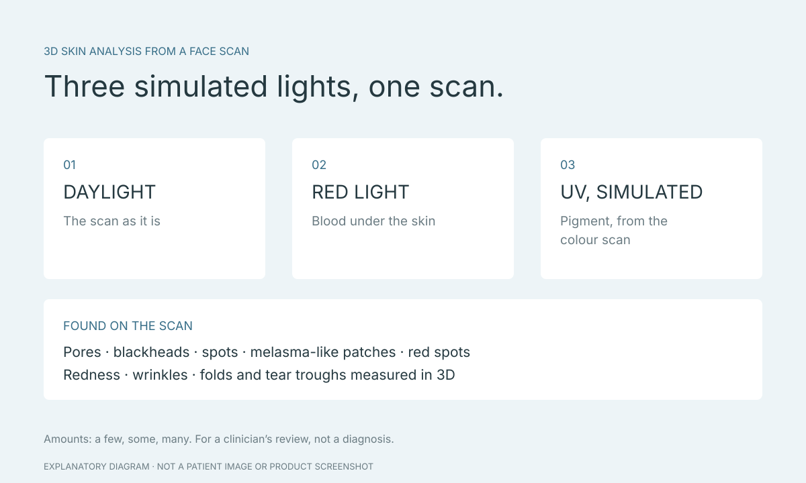 | 3D skin analysis diagram: daylight, red light and simulated UV, with the skin concerns found on the scan | Drawn for this website | - | |
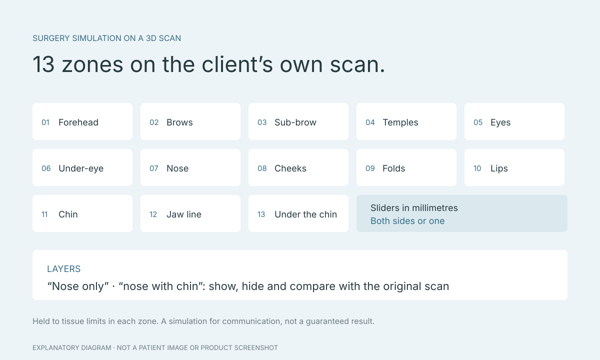 | Diagram of the 13 surgery simulation zones, from forehead, brows and eyes to nose, jaw and under the chin, with sliders and layers | Drawn for this website | - | |
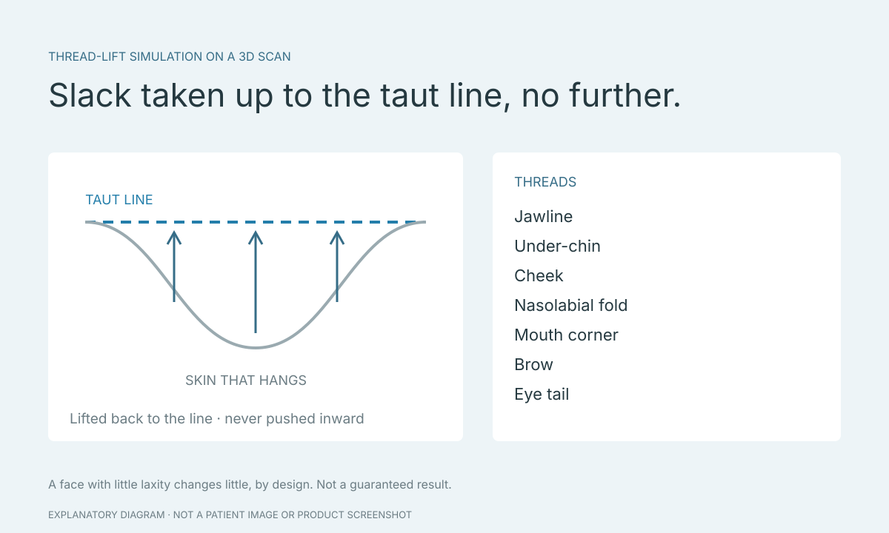 | Thread-lift simulation diagram: skin hanging below its taut line is lifted back up to the line and no further, with the list of threads | Drawn for this website | - |
Faceliora team photography from the official page is used with the site owner’s authorization. Stock photography uses the Pexels License